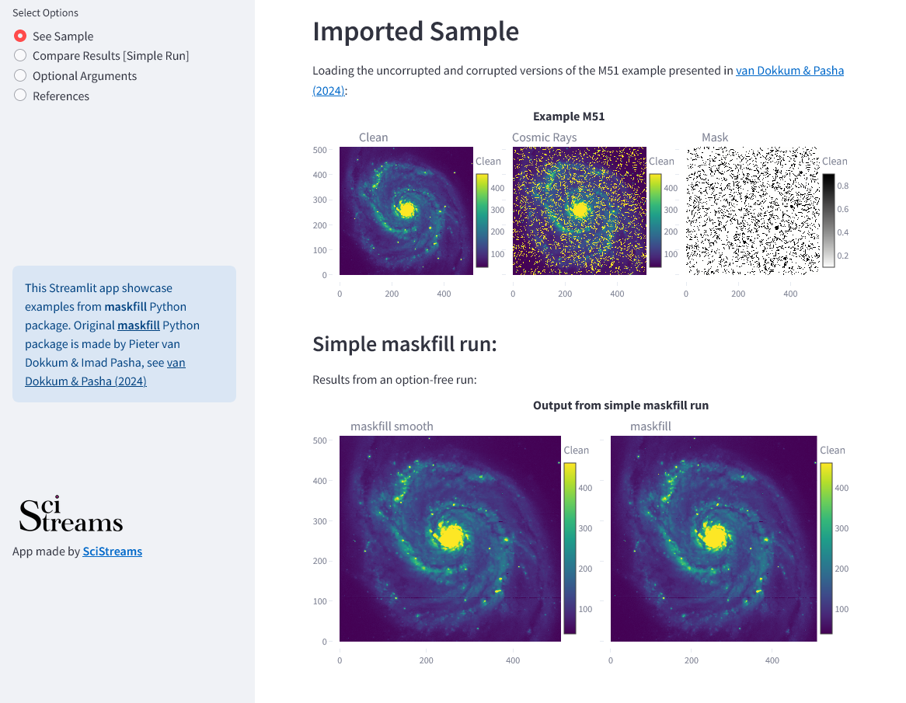
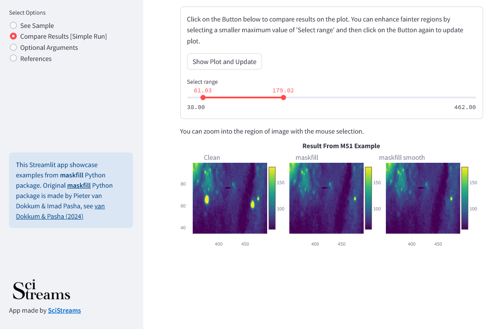
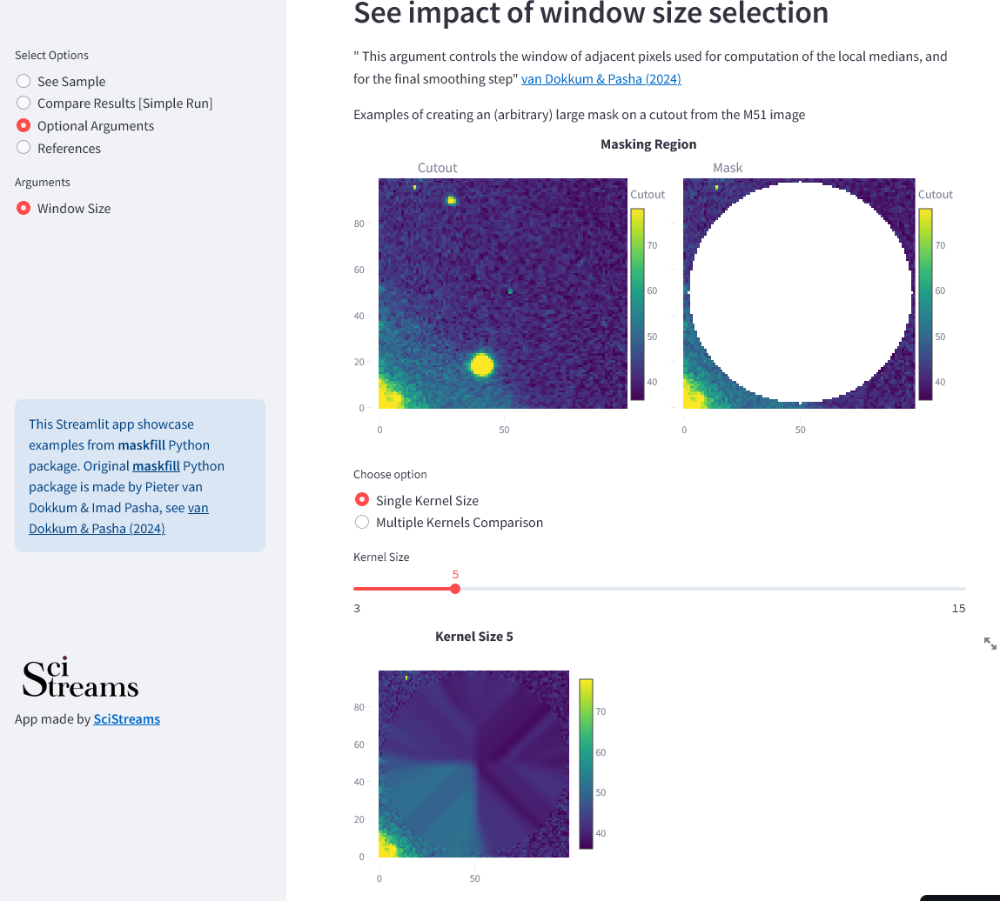

Maskfill
Maskfill is a new method for filling in masked emission in astronomical images
This Streamlit app showcase examples from maskfill Python package. Original maskfill Python package is made by Pieter van Dokkum & Imad Pasha, see van Dokkum & Pasha (2024)
Maskfill App
SciStreams aims to help researchers by making their science more accessible through interactive web applications. Below we present home page of Maskfill App, where you can see example of Image and Mask as well as an initial maskfill results.
Compare results page allows you to interactively adjust image range - so you can enhance fainter regions and examing residuals after maskfill run.
Optional arguments allows you to examing selection of the window size, which controls how many adjacent pixels are used for computation of the local medians. You can chose to examing single kernel size, or see multiple kernels next to each other.
